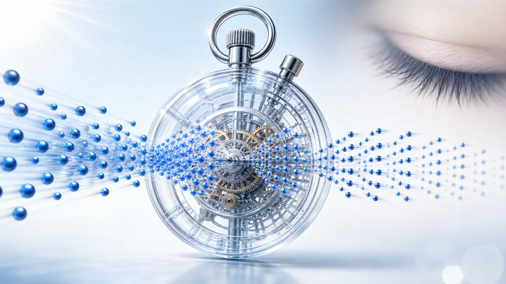
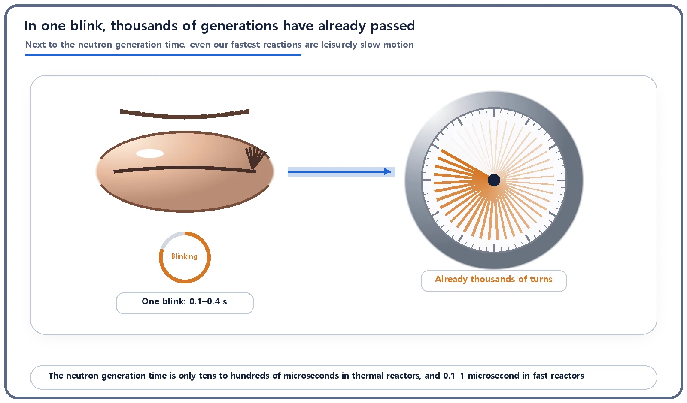
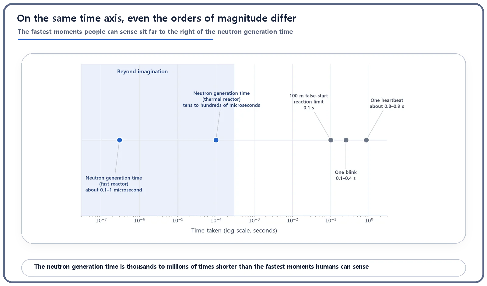

Reactor Kinetics & Reactivity · 105
How Many Times in One Blink? — The Fleeting Instant Called the Neutron Generation Time
In the time it takes to blink, thousands of microseconds tick by. Neutron generations turn over in tens to hundreds of them.

The neutron generation time is the average time for one generation of neutrons to cause the fissions that produce the next: tens to hundreds of microseconds in thermal reactors and about 0.1 to 1 microsecond in fast reactors. That is over 1,000 times shorter than the fastest human reaction. Judged by it alone, a reactor would respond far too fast to control; the small share of delayed neutrons is what slows it to a pace people can handle.
Blink once
Try blinking once, right now. The time it takes your eyelid to drop and come back up is usually said to be about 0.1 to 0.4 seconds, one of the fastest movements the human body makes. Most of us have tried to snap a photo of a moment and ended up with a picture of someone mid-blink.
Inside a reactor, though, there is something that makes even a blink look sluggish. It is called the neutron generation time. Just how short does it have to be for a blink to look slow?
A time no stopwatch can catch
First, what is it? When a fission happens in a reactor, a few new neutrons fly out. They wander through the core until another uranium nucleus absorbs one and splits again. The average time from "a neutron is born" to "it causes the next fission and gives birth to more neutrons" is the neutron generation time. It is like the time it takes to go from one human generation to the next, parents to children, except that the cycle is not 30 years but unimaginably short.
How short? In a thermal reactor (the most common light-water type), roughly a hundred-thousandth to a ten-thousandth of a second: tens to hundreds of microseconds. (The exact value depends on core design and sources quote a range, so we keep to that broad range.) One microsecond is a millionth of a second. To get a feel for it, imagine holding an ultra-precise stopwatch with markings down to the microsecond. In the 0.1 to 0.4 seconds it takes you to blink once, its microsecond hand has already spun thousands of times. Even as your finger starts moving toward the button, the neutrons have already leapt through many generations. By the time you think "let me time this," it's already too late.
Fast reactors are even more extreme. Using fast neutrons directly, without a moderator, they shorten the generation time to about 0.1 to 1 microsecond: hundreds of times faster again than a thermal reactor, a realm no human sense can grasp.

Why does the generation time matter?
If this number were just trivia, "wow, that's short," there would be no reason to write about it. The shortness of the generation time is directly tied to how fast a reactor can change its power.
Point kinetics, the standard model of how reactor power changes over time, says the speed of change roughly follows this proportion:
Rate of power change ∝ reactivity ÷ generation time
Notice that the generation time sits in the denominator. The smaller the denominator, the bigger the result. So the shorter the generation time, the faster and more violently power responds to even a tiny change in reactivity (the measure of how far a reactor is from balance). If every neutron in a reactor were a prompt neutron, emitted the instant of fission, then with a generation time of just tens to hundreds of microseconds, even a tiny reactivity change would send power swinging in far less than the blink of an eye. Forget a person moving control rods by hand: no automatic controller could comfortably chase that in real time.
Yet real reactors run perfectly well at the relaxed pace of control rods being eased in and out. How? The secret is that a tiny fraction of fission neutrons, about 0.65% for uranium-235, are not "prompt" but delayed. Delayed neutrons pop out late, as fission products undergo radioactive decay, anywhere from a few hundred milliseconds to tens of seconds afterward. These few slowpokes stretch the reactor's effective response from microseconds to seconds, a pace people can handle. How they do it is a story of its own; the point to remember here is that, judged by the generation time alone, a reactor ought to respond extremely fast, and delayed neutrons are what make it something people can manage.
Things easily confused with the generation time
Half-life. Half-life is the statistical time for the amount of a radioactive substance to fall by half; the generation time is the time for neutron generations to turn over in a fission chain reaction. Both are "times," but they describe completely different phenomena.
Neutron lifetime. Specialist textbooks draw a fine distinction between "neutron lifetime" and "generation time." Near criticality, though, the two are practically equal, so here we can lump them together as "the time one generation takes."
Reactor period. This is not the generation time either. It is a separate calculated result: the time it takes for power to grow by a fixed factor. The names sound alike, but the concepts differ.
Even our fastest reactions can't compete
Here is a way to feel the gap. Sprinting has an interesting rule: if a runner reacts within 0.1 seconds (100 milliseconds) of the starting gun, it counts as a false start. The reason is simple. For a person to hear the gun, process it in the brain and move the muscles, even a highly trained athlete is considered physically unable to react faster than 0.1 seconds. That 0.1 seconds is, in effect, the limit of human reaction speed.
Yet even this top human limit is more than 1,000 times slower than a thermal reactor's generation time. Against a fast reactor's generation time, the gap blows past a million times. A blink (0.1 to 0.4 seconds) and a resting heartbeat (roughly 0.8 to 0.9 seconds) fare no better. Gather the fastest moments humans can sense, and next to the neutron generation time every one of them looks like leisurely slow motion.

| Event | Typical time |
|---|---|
| Neutron generation (fast reactor) | about 0.1–1 microsecond (10⁻⁷–10⁻⁶ s) |
| Neutron generation (thermal reactor) | tens to hundreds of microseconds (10⁻⁵–10⁻⁴ s) |
| 100 m false-start reaction limit | 0.1 s |
| One blink | about 0.1–0.4 s |
| One resting heartbeat | about 0.8–0.9 s |
So why does this matter?
Don't read this short generation time as "reactors respond dangerously fast." It is quite the opposite. Judged by the generation time alone, a reactor would respond too quickly to control, yet thanks to the built-in delay of delayed neutrons it becomes something people can control on the scale of seconds. And precisely because of this, reactor operation and safety design are always arranged to stay inside the region where delayed neutrons govern the response speed. Step outside it and the response speeds up to the generation-time scale again, which is why operators and protection systems are always careful never to approach that boundary. What exactly that boundary is, is another story.
The takeaways
- The neutron generation time is the average time for one generation of neutrons to be born and produce the next.
- It is tens to hundreds of microseconds in thermal reactors and about 0.1 to 1 microsecond in fast reactors, orders of magnitude shorter than anything humans can sense (a blink, a heartbeat, the 100 m false-start reaction limit).
- Reactors stay controllable by human hands despite this because a tiny share of delayed neutrons slows the response.
- The generation time is a different concept from half-life, neutron lifetime and the reactor period, even if the names or feel are similar.